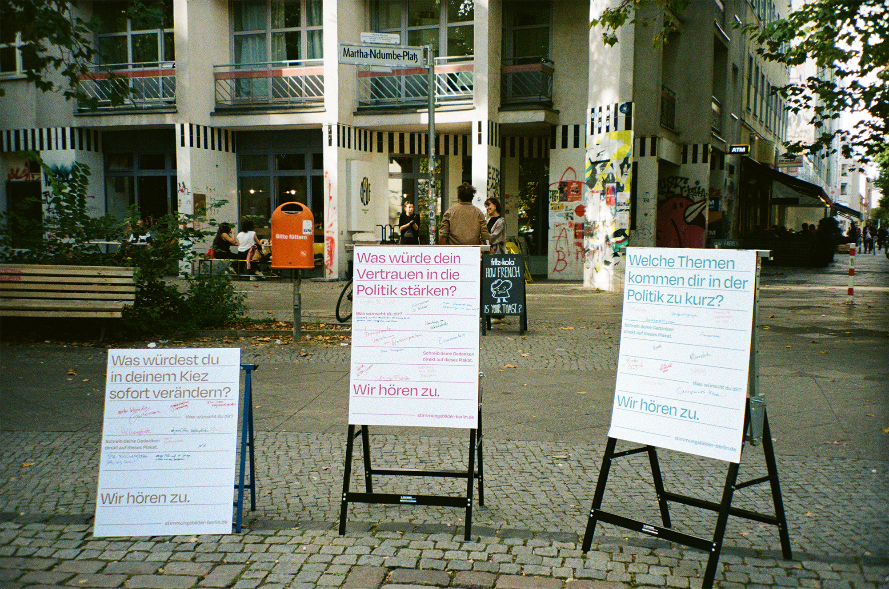
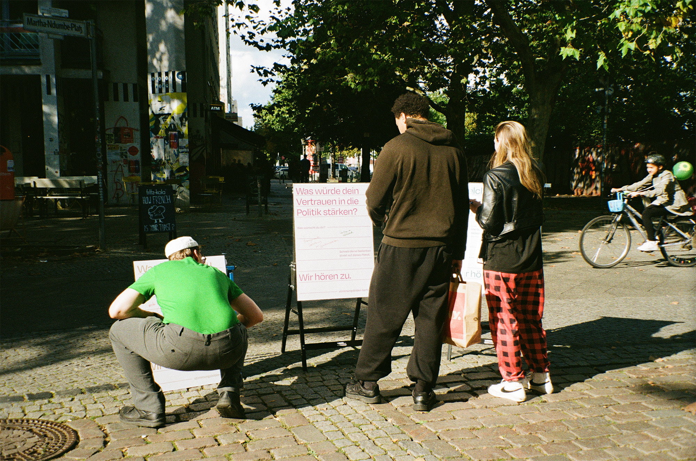
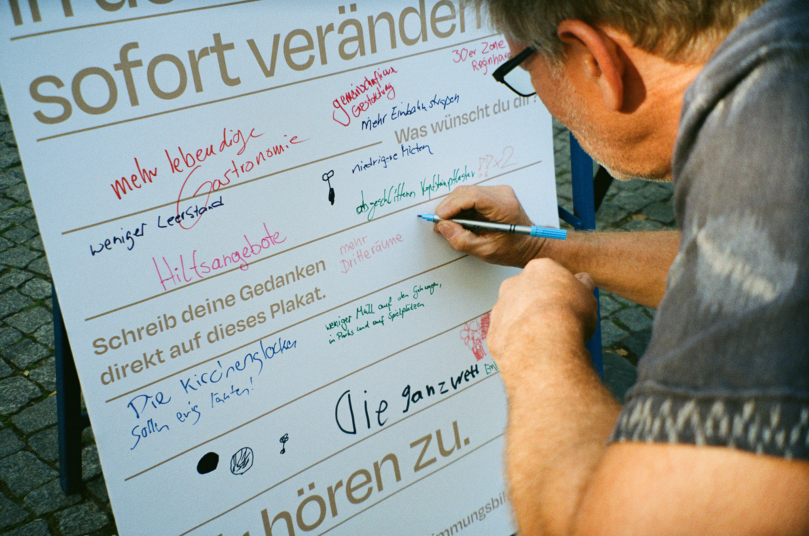
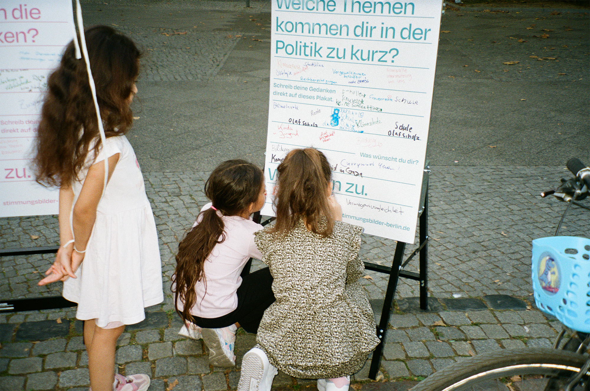
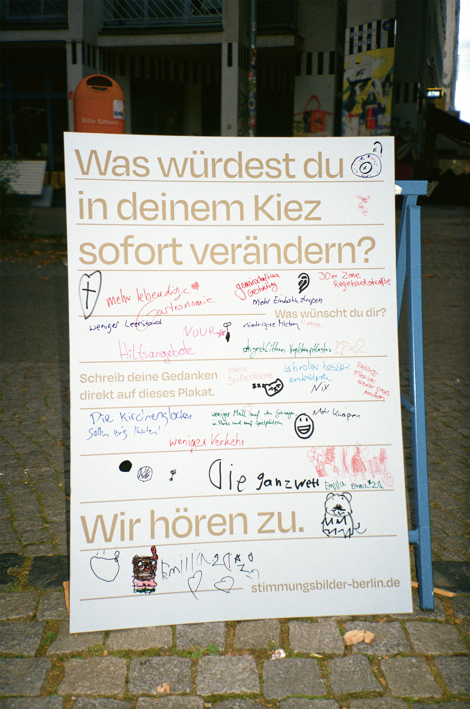
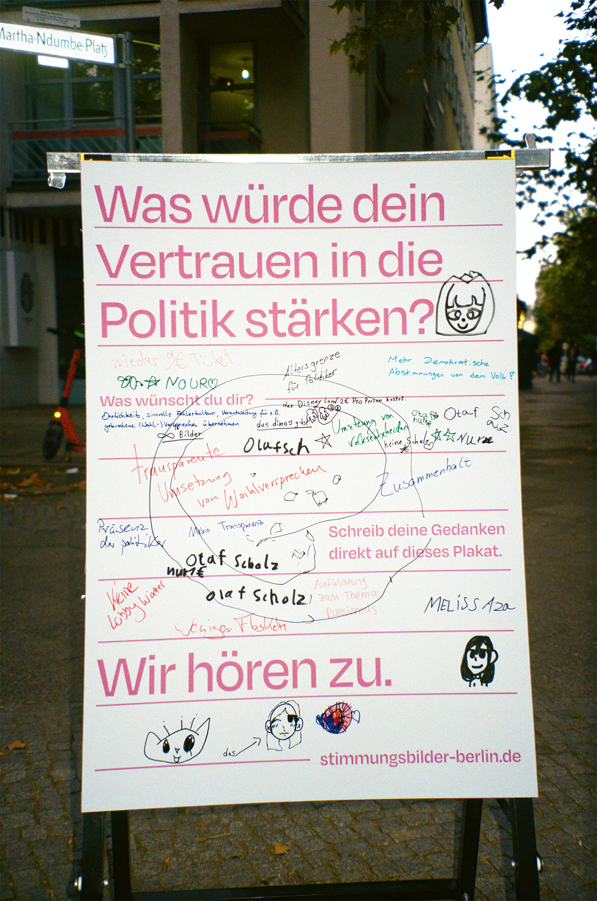
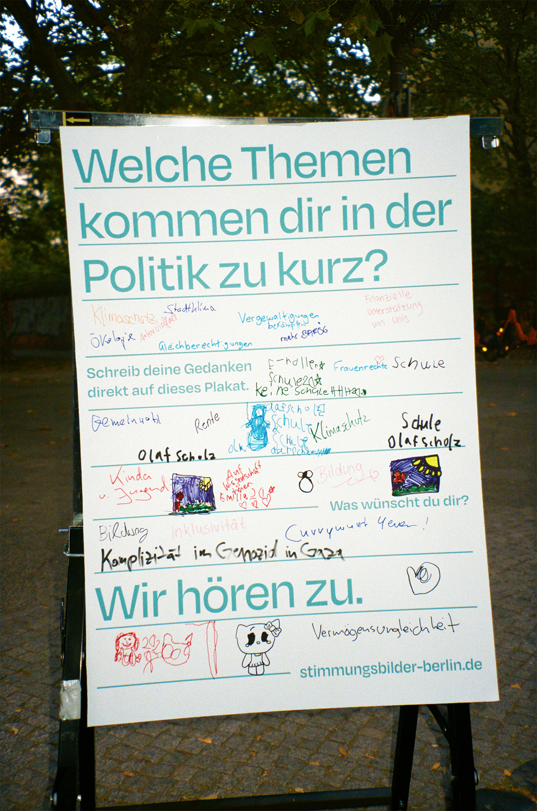

Anlässlich der Berliner Wahl 2026 entstand am 5. September 2026 auf dem Martha-Ndumbe-Platz in Berlin-Wedding ein parteiunabhängiges Dialogformat mit dem Ziel, zuzuhören und individuelle Stimmen und Perspektiven neben der Wahl sichtbar zu machen – analog und handschriftlich.
Vielen Dank an alle Beteiligten für die Teilnahme und den wertvollen Austausch!